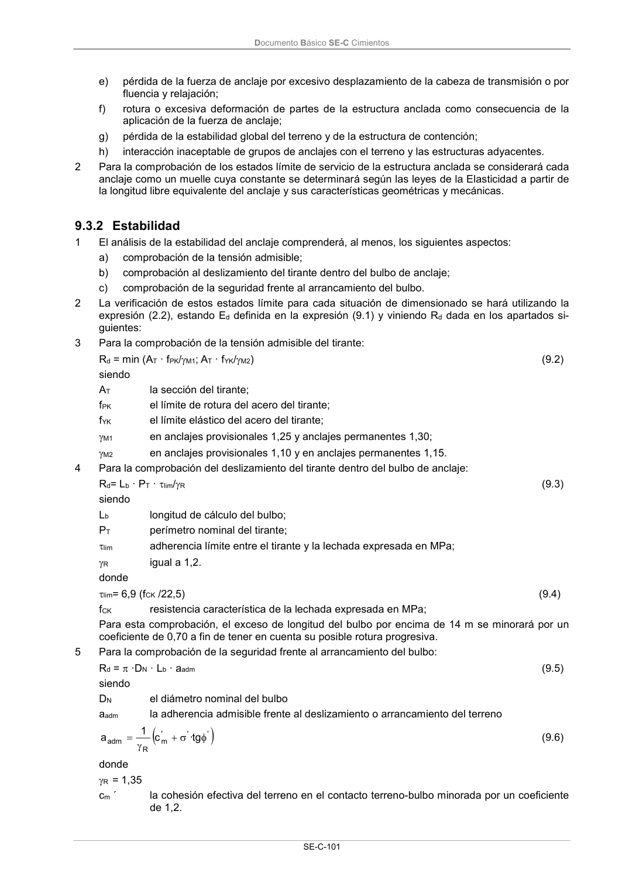

DB-SE-C · 9.3.2 Estabilidad · versión 2019-12-20
SHA256: a71133f4b0dca253e45ea3071c70f2a512354bcc5cd841bf89b1a502f567ac5e · página física 106 de 165 · métodos de encabezado
solo si están cotejados.
Documento · ← p. 105 · p. 107 →
Formatos: Markdown · JSON de bloques · PDF p. 106 · imagen PNG
Documento Básico SE-C Cimientos
SE-C-101
e)
pérdida de la fuerza de anclaje por excesivo desplazamiento de la cabeza de transmisión o por
fluencia y relajación;
f)
rotura o excesiva deformación de partes de la estructura anclada como consecuencia de la
aplicación de la fuerza de anclaje;
g)
pérdida de la estabilidad global del terreno y de la estructura de contención;
h)
interacción inaceptable de grupos de anclajes con el terreno y las estructuras adyacentes.
2
Para la comprobación de los estados límite de servicio de la estructura anclada se considerará cada
anclaje como un muelle cuya constante se determinará según las leyes de la Elasticidad a partir de
la longitud libre equivalente del anclaje y sus características geométricas y mecánicas.
9.3.2 Estabilidad
1
El análisis de la estabilidad del anclaje comprenderá, al menos, los siguientes aspectos:
a)
comprobación de la tensión admisible;
b)
comprobación al deslizamiento del tirante dentro del bulbo de anclaje;
c)
comprobación de la seguridad frente al arrancamiento del bulbo.
2
La verificación de estos estados límite para cada situación de dimensionado se hará utilizando la
expresión (2.2), estando Ed definida en la expresión (9.1) y viniendo Rd dada en los apartados si-
guientes:
3
Para la comprobación de la tensión admisible del tirante:
Rd = min (AT · fPK/M1; AT · fYK/M2)
(9.2)
siendo
AT
la sección del tirante;
fPK
el límite de rotura del acero del tirante;
fYK
el límite elástico del acero del tirante;
M1
en anclajes provisionales 1,25 y anclajes permanentes 1,30;
M2
en anclajes provisionales 1,10 y en anclajes permanentes 1,15.
4
Para la comprobación del deslizamiento del tirante dentro del bulbo de anclaje:
Rd= Lb · PT · lim/R
(9.3)
siendo
Lb
longitud de cálculo del bulbo;
PT
perímetro nominal del tirante;
lim
adherencia límite entre el tirante y la lechada expresada en MPa;
R
igual a 1,2.
donde
lim= 6,9 (fCK /22,5)
(9.4)
fCK
resistencia característica de la lechada expresada en MPa;
Para esta comprobación, el exceso de longitud del bulbo por encima de 14 m se minorará por un
coeficiente de 0,70 a fin de tener en cuenta su posible rotura progresiva.
5
Para la comprobación de la seguridad frente al arrancamiento del bulbo:
Rd = ·DN · Lb · aadm
(9.5)
siendo
DN
el diámetro nominal del bulbo
aadm
la adherencia admisible frente al deslizamiento o arrancamiento del terreno
'
'
'
m
R
adm
tg
·
c
1
a
(9.6)
donde
R = 1,35
cm ´
la cohesión efectiva del terreno en el contacto terreno-bulbo minorada por un coeficiente
de 1,2.
